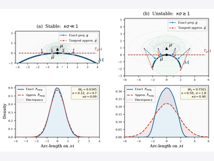
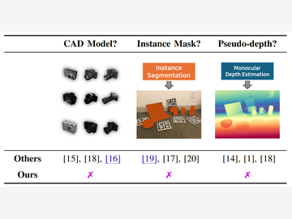
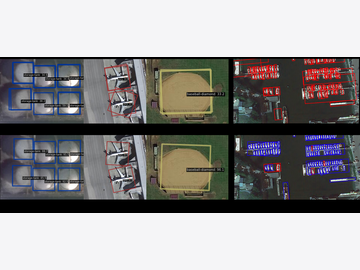
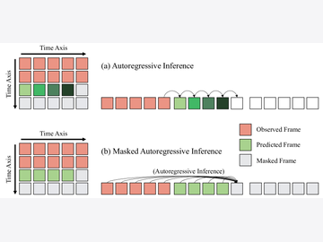
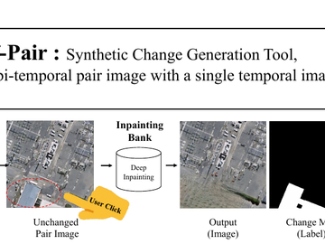
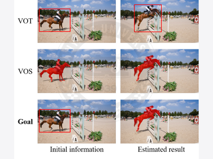
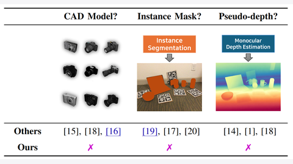
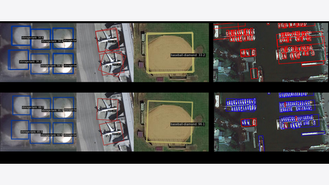
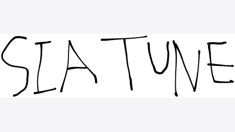
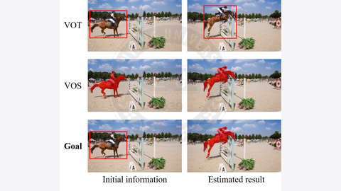

Hakjin Lee
Research Engineer at PIT IN Corp.
I study how learning systems can reliably act in the physical world under limited experience. At PIT IN Corp., my research centers on 3D vision for robotics — primarily stereo vision and object pose estimation — and on robot learning, motivated by the goal of building real products and services that interact with the physical world.
Previously, I was at SI Analytics and Satrec Initiative, where I worked on remote sensing computer vision: synthetic data augmentation for change detection, rotated detection transformers, and spatiotemporal models for weather forecasting. I also contribute to the OpenMMLab open-source ecosystem.
hj at pitin-ev dot com • Google Scholar • GitHub
Updates
- 2026 – Distributional Stability of Tangent-Linearized Gaussian Inference on Smooth Manifolds accepted to IEEE RA-L 2026.
- 2026 – You Only Pose Once accepted to ICRA 2026.
- 2025 – RHINO (Hausdorff distance matching with adaptive query denoising) published at WACV 2025.
- 2024 – Masked Autoregressive Model for Weather Forecasting released on arXiv.
- 2023 – Self-pair published at WACV 2023.
Research

Junghoon Seo, Hakjin Lee, Jaehoon Sim
IEEE Robotics and Automation Letters (RA-L), 2026
Paper
•
Code

Hakjin Lee, Junghoon Seo, Jaehoon Sim
IEEE International Conference on Robotics and Automation (ICRA), 2026
Project
•
Paper
•
Code
•
Video

Hakjin Lee*, MinKi Song*, Jamyoung Koo, Junghoon Seo (* equal contribution)
IEEE/CVF Winter Conference on Applications of Computer Vision (WACV), 2025
Paper
•
Code

Doyi Kim, Minseok Seo, Hakjin Lee, Junghoon Seo
arXiv preprint arXiv:2409.20117, 2024
Paper
•
Code

Minseok Seo, Hakjin Lee, Yongjin Jeon, Junghoon Seo
IEEE/CVF Winter Conference on Applications of Computer Vision (WACV), 2023
Paper
•
Code

Hakjin Lee
M.S. Thesis, Hanyang University, 2020
Code
Selected Projects

YOPO
You Only Pose Once — minimalist detection transformer for monocular 9D multi-object pose estimation.

RHINO
Official implementation of Hausdorff distance matching with adaptive query denoising for rotated DETR (WACV 2025).

siatune
Hyperparameter tuning toolbox for OpenMMLab frameworks — especially for remote sensing tasks.

SiamVOS
Video object segmentation requiring only a bounding box.
Experience
-
Research Engineer, PIT IN Corp., May 2025 – Present
Research on 6D object pose estimation and imitation learning for robot manipulation. -
Research Engineer, SI Analytics, Sep 2021 – Mar 2025
Built and maintained a deep learning framework ecosystem spanning super-resolution, semantic segmentation, and distributed training. Researched spatial reasoning in vision-language models and few-shot / interactive object detection. -
Research Engineer, Satrec Initiative, Feb 2020 – Aug 2021
Researched object detection for rotated and few-shot regimes. Productionized classification and detection engines (detectron2, mmdetection, DETR) with an MLOps stack on Kubernetes (ArgoCD, MLflow, Ray Tune).
Awards
-
OpenMMLab Contributor of the Year, 2022
29 merged PRs across the OpenMMLab ecosystem, including ZeroRedundancyOptimizer support. -
3rd Place ($7,500 prize),
SpaceNet 8 Flood Detection Challenge,
2022
Machine learning for flood detection from satellite imagery (hosted by Maxar & AWS). -
6 / 1,900 teams,
xView3 Dark Vessel Detection Challenge, 2021
Led the team for detecting illegal fishing vessels in synthetic aperture radar imagery; competition hosted by the U.S. Defense Innovation Unit.
Education
-
M.S. in Computer Science, Hanyang University, 2018–2020
Advised by Prof. Jongwoo Lim. Thesis: End-to-End Trainable Fully-Convolutional Siamese Networks for Video Object Segmentation with Bounding Box. - B.A. in Philosophy & B.S. in Computer Science and Engineering, Hanyang University, 2014–2018